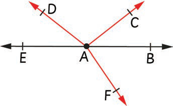
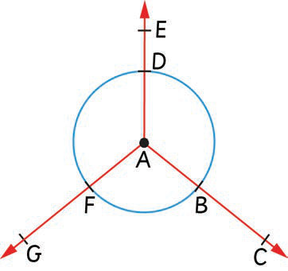

Example 2
Which rays are opposite to each other in the following figure?

Answer
Ray AB and ray AE are opposite rays in the given figure. The rays start from point A and proceed in the opposite direction to form a straightline EB.
Example 3
Write the names of all rays formed from the following figure:

Answer
From the given figure, the rays are: